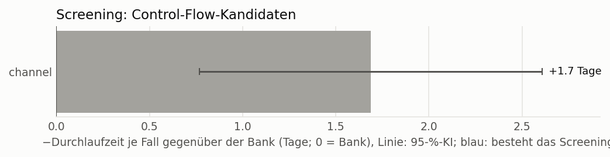
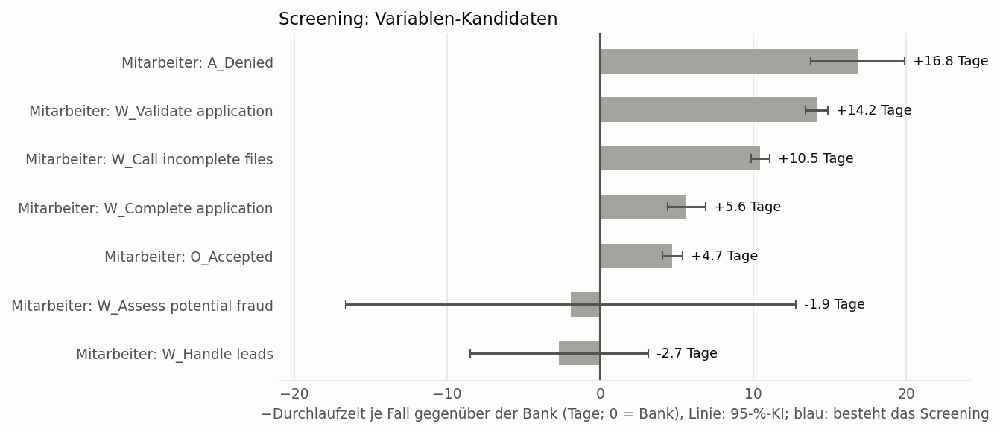

| Policy-Gewinn | KI unten | KI oben | Gewinn ggü. Bank | Bank KI unten | Bank KI oben | Überlappung | Placebo d | |
|---|---|---|---|---|---|---|---|---|
| Kandidat | ||||||||
| call | 119,9 | 74,4 | 165,4 | 121,0 | 82,1 | 159,8 | 0,994 | -0,010 |
| second_offer | -26,0 | -64,4 | 12,4 | 134,3 | 92,7 | 175,9 | 0,989 | 0,010 |
| channel | 125,8 | -10,8 | 262,5 | 123 | -12,3 | 258,3 | 0,055 | -0,051 |
| call_after_offers | 9,898 | 6,781 | 13,0 | 17,3 | 13,6 | 20,9 | 0 | 0,024 |

| Policy-Gewinn | KI unten | KI oben | Gewinn ggü. Bank | Bank KI unten | Bank KI oben | Überlappung | Placebo d | Pool | Poolgröße Median | Fälle mit Wahl | |
|---|---|---|---|---|---|---|---|---|---|---|---|
| Kandidat | |||||||||||
| number_of_terms | -85,4 | -106,4 | -64,4 | 654,0 | 615,9 | 692,1 | 0,876 | 0,006 | |||
| Mitarbeiter: A_Denied | -17,5 | -42,4 | 7,318 | 16,9 | -6,026 | 39,8 | 0,086 | 0,258 | kompetent: 143 Mitarbeiter | 12 | 1 |
| Mitarbeiter: O_Accepted | -8,364 | -47,5 | 30,8 | 35,5 | 7,129 | 63,9 | 0,307 | 0,141 | kompetent: 126 Mitarbeiter | 7 | 1 |
| Mitarbeiter: W_Assess potential fraud | kompetent: 97 Mitarbeiter, gewählter in 3 % der Fälle laut Regel außerhalb | ||||||||||
| Mitarbeiter: W_Call incomplete files | 64,3 | -132,9 | 261,5 | 277,6 | 119,3 | 435,9 | 0,171 | 0,252 | kompetent: 143 Mitarbeiter | 9 | 1 |
| Mitarbeiter: W_Complete application | 366,0 | 53,0 | 679,0 | 654,8 | 410,9 | 898,8 | 0,005 | 0,160 | kompetent: 136 Mitarbeiter | 25 | 1 |
| Mitarbeiter: W_Handle leads | 92,0 | -490,9 | 674,9 | 310,4 | -86,9 | 707,7 | 0,129 | 0,382 | kompetent: 129 Mitarbeiter | 12 | 1 |
| Mitarbeiter: W_Validate application | 68,4 | -76,1 | 212,8 | 194,9 | 80,7 | 309,2 | 0,051 | 0,124 | kompetent: 143 Mitarbeiter | 10 | 1 |